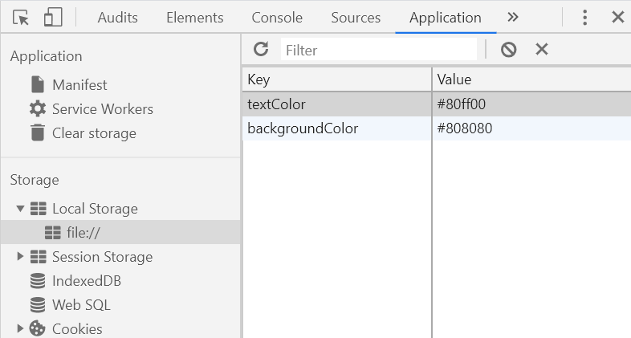

Here is some more example text. The colors are saved in local storage, so if you choose a color, and then close your browser, and re-open it, you'll see the colors you chose.
More info here: https://developer.mozilla.org/en-US/docs/Web/API/Window/localStorage
If you work with local storage, open browser dev tools. In Chrome, look under the Application tab. On the left side of the dev tools window, choose Local Storage, then file:///. You can then see and work with (add, edit, delete, delete all) the stored local data
